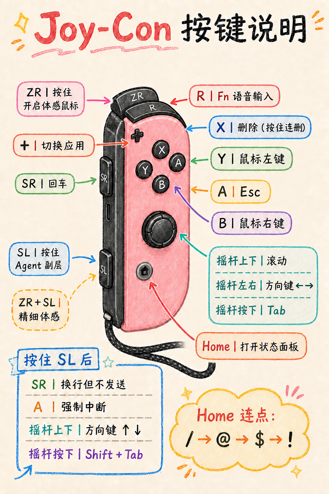

语音输入单次 Fn
01 一只手，也能继续 Vibe Coding
把 Joy-Con
变成你的体感遥控器
离开键盘也能移动光标、语音输入、提交提示词、处理中断与 Agent 选择。 这不是游戏模式，是一套为 macOS 远距离工作重新编排的手势语言。
- ZR握住移动
- R开口说话
- SR回车发送
ZRR
+
⌂
SRSL
按住 ZR
手腕轻轻转动
松手即停
光标留在原位
记住这一句 ZR 是鼠标离合器 · SL 是 Agent 副层 · R 是语音入口
02 第一次使用
连接、授权、静置。
三步就绪。
第一次完成后，日常只需要唤醒 Joy-Con 和打开菜单栏 App。
-
1
蓝牙连接
打开 Mac「系统设置 → 蓝牙」，配对并连接 Joy-Con (R)。
指示灯循环闪烁表示仍在寻找连接。 -
2
允许控制
首次启动时，在「隐私与安全性」中授予 App 辅助功能权限。
若按键无响应，再检查「输入监控」。 -
3
静置校准
连接后把 Joy-Con 放稳约一秒，等菜单栏状态显示已连接。
每次按住 ZR 都会以当前握姿重新锚定方向。
03 三层操作逻辑
不用背整张键盘。
只要记住你正按着谁。
日常主层
用于鼠标、输入、发送与基本导航。大多数时候，你只会用这一层。
发送Return / Enter
鼠标左键按住可拖动
鼠标右键打开上下文菜单
删除按住连续删除
返回 / 拒绝Esc
切换应用Command + Tab
状态面板打开控制台
下一焦点摇杆按下 = Tab
滚动页面摇杆上下
左右方向键摇杆左右
Agent 副层
按住 SL 不松手，再按下面的键；松开 SL 后立即回到普通层。
换行但不发送Shift + Enter
强制中断Control + C
上一焦点Shift + Tab
真正的上下键菜单、历史、选择器
特殊符号轮换连续点 Home：/ → @ → $ → !
保持普通功能R、Y、B、X、+ 等仍执行主层动作
体感鼠标层
ZR 像相机快门：按下才移动，松开就停。每次按下都以当前握姿重新定位。
左右转腕
光标横向移动。不需要大幅甩动，轻转即可。
上下指向
光标纵向移动。保持手腕自然，不必刻意竖握。
ZR + SL 精细体感
速度降至当前精准比例，适合按钮、光标与小目标。
1指向目标方向→2按住 ZR 移动→3松开 ZR 停住
04 一张图记住全部
按键位置与动作对照
这张手绘图对应 App 的默认映射；控制台中自定义之后，以你的当前配置为准。

05 Vibe Coding 实战
从说出想法，
到控制 Agent。
说出需求
- R 开始系统听写
- 自然说出修改要求
- R 结束听写
- SR 回车发送
长句建议分段说，使用 SL + SR 插入换行。
处理 Agent 面板
- SL + 摇杆↑↓ 移动选择
- Tab / Shift+Tab 切换焦点
- SR 确认当前选项
- A 拒绝或返回
Codex 与 Claude Code 的具体审批键可能不同，方向键与 Enter 是最通用的组合。
打断与修正
- A 发送 Esc，关闭或中断
- SL + A 强制发送 Control+C
- X 删除，按住连续删除
- + 快速切回上一应用
强制中断只在确实需要时使用；部分终端空闲时 Control+C 可能清空输入。
06 菜单栏控制台
Home 一按，
所有设置都在这里。
- 体感调节灵敏度、水平倍率、加速度、稳定度、精准比例与方向反转。
- 按键自定义每个实体键分别配置“单按”和“按住 SL 后”的动作。
- 重新校准出现持续漂移或握姿改变明显时，让手柄静止后执行。
- 恢复默认只恢复按键映射，不会改掉你的体感灵敏度。
07 遇到问题
先看状态，
再做最小动作。
显示已连接，但所有按键都没反应＋
先关闭再开启控制台中的「启用 Joy-Con 遥控」。仍无响应时，检查辅助功能和输入监控权限，然后重新连接蓝牙。
按住 ZR 后准星出现，鼠标却不移动＋
让 Joy-Con 静置约一秒等待初始化；随后松开 ZR，再重新按住。若一直显示初始化，可断开蓝牙后重新连接。
光标持续漂移或按下 ZR 时跳一下＋
避免在按下 ZR 的瞬间快速甩动。把手柄稳定在准备使用的握姿，再按住 ZR；必要时打开控制台执行「重新校准」。
左右或上下方向反了＋
打开「体感调节」，分别切换「水平反向」或「垂直反向」。两项独立生效，不必改变握法。
移动太快、太抖，或很难停住＋
先微调整体灵敏度；小幅抖动优先提高稳定度，需要快速横移则调整水平倍率或加速度。一次只改一项，更容易找到合适手感。
R 能开始听写，但不能按一次结束＋
确认 macOS 听写设置使用的是“单按 Fn 切换”，而不是“按两次 Fn”或其他组合键。R 本身只负责发送一次 Fn。
08 最后记住
“按住才移动，松开即停住；
需要第二层，就先握住 SL。”
ZR 体感
R 语音
SR 发送
SL 副层
回到顶部 ↑